Mehrfachauswahl
MULTISELECT · Eingabefeld zur Auswahl mehrerer Optionen
Was ist ein Mehrfachauswahlfeld?
- 1.1Feld hinzufügen und Aufbau des Eigenschaftsbereichs
1.1Feld hinzufügen und Aufbau des Eigenschaftsbereichs
Überblick
Mehrfachauswahl (MULTISELECT) ist ein Eingabefeld, in dem aus den Optionen mehrere gleichzeitig ausgewählt werden. Verwenden Sie es für Elemente, bei denen alle zutreffenden Einträge markiert werden müssen, z. B. Begleiterkrankungen · Begleitmedikation · Symptomlisten. Die Optionen werden als Checkboxen angezeigt, und auch der gespeicherte Wert ist eine Menge der ausgewählten Optionen. Soll nur eine Option ausgewählt werden, verwenden Sie den Typ Einzelauswahl.
Bildschirmbeschreibung
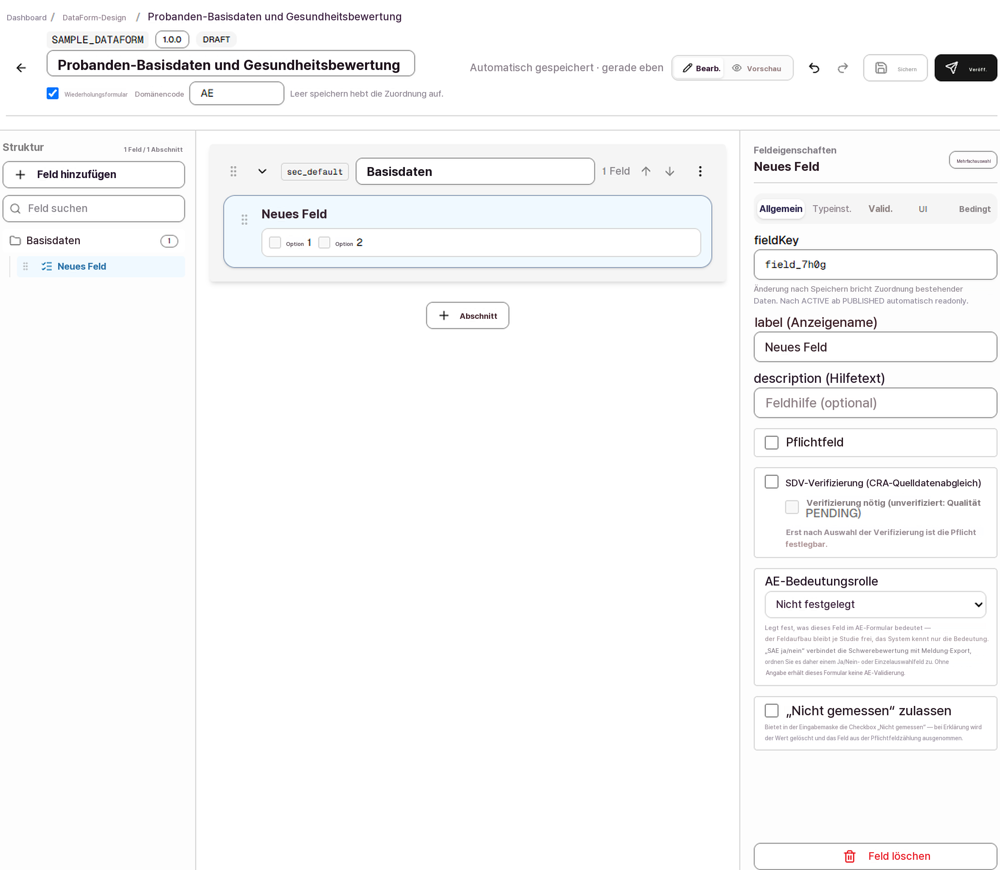
[+ Feld hinzufügen] — Wenn Sie hier den Typ festlegen, wird das Feld erstellt.
Im Strukturbaum wird das neue Feld hinzugefügt.
Auf dem WYSIWYG-Canvas sind bereits zwei Checkboxen vorhanden. Option 1 · Option 2 sind nur Platzhalter und müssen unbedingt geändert werden. 3.1
fieldKey — der tatsächliche Schlüssel, unter dem der Wert gespeichert wird. 2.1
label (Anzeigename) · description (Hilfetext) — der auf dem Bildschirm angezeigte Name und die ergänzende Beschreibung. 2.1
Pflichtfeld · SDV-Verifizierung — werden in 2.2 · 2.3 behandelt.
AE-Bedeutungsrolle — Wie der Bildschirmhinweis mit „ordnen Sie es einem Ja/Nein- oder Einzelauswahlfeld zu“ angibt, kann dieser Typ nicht zugeordnet werden. Denn ein Feld, das mehrere Werte enthält, kann keine einzelne Achse wie die Schwerebewertung abbilden.
„Nicht gemessen“ zulassen — wird in 2.4 behandelt.
Typ-Badge „Mehrfachauswahl“ — der Typ des ausgewählten Felds. Nach dem Hinzufügen kann er nicht mehr geändert werden.
5 Eigenschafts-Tabs — Allgemein · Typeinstellungen · Validierung · UI · Bedingt. Die Kapitel 2–6 dieses Handbuchs entsprechen den einzelnen Tabs.
Zu beachten
Unbedingt prüfen Datenschäden · Formular nicht abschließbar
- • Der gespeicherte Wert ist eine Menge der
value-Werte der ausgewählten Optionen. Auch bei nur einer Auswahl ist es eine Menge, und ohne Auswahl ist es eine leere Menge — auch in den Exportdaten stehen mehrere Werte in einer Zelle; stimmen Sie das Format daher vorab mit den Analyseverantwortlichen ab. - • Der Typ kann nach dem Hinzufügen nicht geändert werden. Wenn Sie den falschen Typ gewählt haben, löschen Sie das Feld und fügen Sie es erneut hinzu. Ob nur eine oder mehrere Optionen ausgewählt werden sollen, müssen Sie von Anfang an festlegen.
- • Nach der Veröffentlichung (PUBLISH) kann die Struktur nicht mehr geändert werden. Sind im laufenden Betrieb Änderungen nötig, veröffentlichen Sie eine neue Version.
Tab „Allgemein“ — Name · Pflicht · Verifizierung · Nicht gemessen
- 2.1fieldKey · Anzeigename · Hilfetext
- 2.2Pflichtfeld
- 2.3SDV-Verifizierung (CRA-Quelldatenabgleich)
- 2.4„Nicht gemessen“ zulassen
2.1fieldKey · Anzeigename · Hilfetext
Überblick
Bereich zur Festlegung des Namens eines Felds. Speicherschlüssel (fieldKey) und angezeigter Name (label) sind unterschiedliche Werte, und bis wann sie geändert werden dürfen, ist verschieden.
Bildschirmbeschreibung
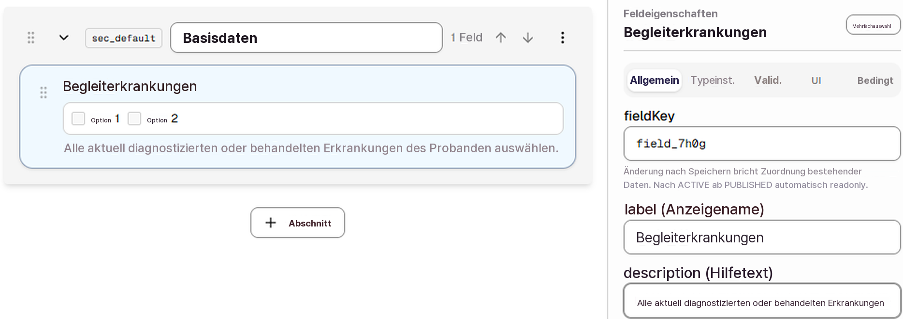
label (Anzeigename) — Geben Sie den Namen des Elements ein, der in der Eingabemaske angezeigt wird.
Erscheint als Feldtitel auf dem Canvas.
description (Hilfetext) — Geben Sie die ergänzende Beschreibung ein, die unter dem Anzeigenamen erscheint. Bleibt sie leer, wird nichts angezeigt.
Erscheint als graue Schrift unter den Checkboxen.
fieldKey — der tatsächliche Schlüssel, unter dem der Wert gespeichert wird. Beim Hinzufügen eines Felds wird er automatisch vergeben, z. B. field_7h0g, und kann in Buchstaben · Ziffern · Unterstriche geändert werden. Er wird auf dem Bildschirm nicht angezeigt — prüfen Sie unbedingt den Abschnitt „Zu beachten“ unten.
Zu beachten
Unbedingt prüfen Datenschäden · Formular nicht abschließbar
- • ⛔ Ändern Sie den fieldKey nach dem Speichern nicht. Wie der Bildschirmhinweis sagt: „Änderung nach Speichern bricht Zuordnung bestehender Daten“ — bereits eingegebene Werte werden nicht mit dem neuen Schlüssel verknüpft und gehen praktisch verloren.
- • Geben Sie im Hilfetext an, dass „alle auszuwählen“ sind. Wenn Sie wie in der Aufnahme „Alle … Erkrankungen des Probanden auswählen“ angeben, verringern Sie den Fehler, dass Erfasser nur eine Option auswählen und weitergehen — manche wissen auch bei Checkboxen nicht, dass mehrere ausgewählt werden müssen.
- • Wechselt das Formular nach ACTIVE in den Status PUBLISHED, wird das Eingabefeld fieldKey automatisch schreibgeschützt. Erst ab diesem Zeitpunkt verhindert das System Änderungen; bis dahin müssen Sie selbst darauf achten.
Leicht missverständliches Verhalten
- • Den Anzeigenamen können Sie jederzeit gefahrlos ändern, denn er ist kein Speicherschlüssel, sondern ein Bildschirmtext.
2.2Pflichtfeld
Überblick
Legt fest, ob dieses Element zwingend ausgewählt werden muss. Bei der Mehrfachauswahl bedeutet Pflicht, dass sie mit mindestens einer Auswahl erfüllt ist — wie viele ausgewählt werden müssen, kann nicht festgelegt werden.
Bildschirmbeschreibung
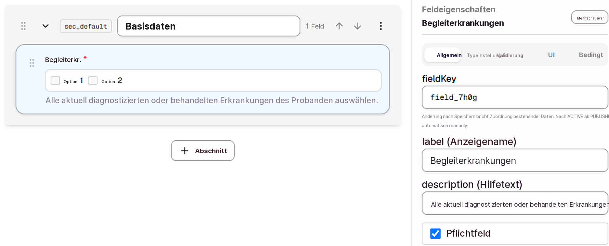
Pflichtfeld — Wenn aktiviert, wird dieses Feld zum Pflichtfeld.
Rechts neben dem Anzeigenamen auf dem Canvas erscheint ein roter Stern (*), der Benutzer auf die Pflicht hinweist.
Zu beachten
Unbedingt prüfen Datenschäden · Formular nicht abschließbar
- • ⛔ Erstellen Sie zuerst eine Option „Nicht zutreffend“. Probanden, auf die kein Eintrag zutrifft, können nichts auswählen und das Formular nicht abschließen. Ist „Keine“ bei einem Element häufig, z. B. Begleiterkrankungen · Begleitmedikation, nehmen Sie die Option
Keinein die Optionen auf. 3.2 - • Felder, die durch bedingte Anzeige ausgeblendet sind, sind von der Pflichtprüfung befreit. Kap. 6 Das Ausblenden im Tab „UI“ nimmt sie dagegen nicht aus — verwechseln Sie das nicht. 5.3
Leicht missverständliches Verhalten
- • „Keine“ und „noch nicht eingegeben“ sind verschieden. Ein als Option angelegtes „Keine“ wird als geprüftes Ergebnis gespeichert; bleibt das Feld dagegen leer, ist nicht einmal erkennbar, ob geprüft wurde — deshalb werden die Daten eindeutiger, wenn Sie es als Option anlegen. 2.4
Hinweis
- • Die Pflichteinstellung wird für die Beurteilung des Formularabschlusses verwendet. Wird nichts ausgewählt, gilt der Wert als leer.
2.3SDV-Verifizierung (CRA-Quelldatenabgleich)
Überblick
SDV (Source Data Verification) ist das Verfahren, bei dem der Monitor (CRA) die eingegebenen Werte mit den Quelldaten der Prüfstelle abgleicht. Hier legen Sie fest, ob dieses Feld Gegenstand dieses Abgleichs ist. Diese Einstellung ist bei allen Feldtypen gleich, daher ist auch der Bildschirm unabhängig vom Typ identisch.
Bildschirmbeschreibung


SDV-Verifizierung (CRA-Quelldatenabgleich) — Wenn aktiviert, wird dieses Feld in die Abgleichliste des CRA aufgenommen.
Mit der Aktivierung wird das Unterelement aktiv.
Verifizierung erforderlich (unverifiziert: Qualität PENDING) — kann erst festgelegt werden, nachdem ① aktiviert wurde. Wenn aktiviert, bleibt der Qualitätsstatus der betreffenden Daten auf PENDING, bis der CRA den Abgleich abgeschlossen hat.
Bevor ① aktiviert ist, ist ② ausgegraut und inaktiv. Wie der Bildschirmhinweis sagt: „Erst nach Auswahl der Verifizierung ist die Pflicht festlegbar.“
Zu beachten
Unbedingt prüfen Datenschäden · Formular nicht abschließbar
- • Wenn sich der Wert ändert, wird die Verifizierung aufgehoben. Schon wenn nur ein Häkchen hinzugefügt oder entfernt wird, kehrt der Qualitätsstatus zu PENDING zurück, und der CRA muss erneut abgleichen.
Leicht missverständliches Verhalten
- • Bei der Mehrfachauswahl ist der Abgleich aufwendig. Denn es muss nicht nur geprüft werden, ob die ausgewählten Einträge stimmen, sondern auch, ob kein Eintrag fehlt — realistischer ist es, nur Elemente festzulegen, bei denen Auslassungen ein Problem sind, z. B. Begleiterkrankungen.
- • SDV kann nicht von der Person durchgeführt werden, die die Daten eingegeben hat. Das System erzwingt eine Kreuzprüfung (Cross-User SoD); eingebende und verifizierende Person müssen daher zwingend verschieden sein.
Hinweis
- • Der Qualitätsstatus durchläuft PENDING → VERIFIED → CLEAN. Ist auch nur ein Feld mit Verifizierungspflicht unverifiziert, können die betreffenden Daten nicht CLEAN werden.
2.4„Nicht gemessen“ zulassen
Überblick
Mit dieser Funktion wird der Fall, dass keine Prüfung möglich war, als eigener Wert erfasst. Wird nichts ausgewählt, lassen sich „noch nicht eingegeben“ und „geprüft, aber unbekannt“ nicht unterscheiden. Diese Erklärung unterscheidet die beiden.
Bildschirmbeschreibung

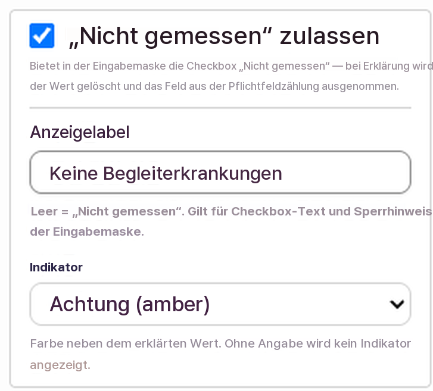
„Nicht gemessen“ zulassen — Wenn aktiviert, erscheint in der Eingabemaske die Checkbox „Nicht gemessen“, und die beiden folgenden Elemente werden angezeigt.
Anzeigelabel — Bleibt es leer, gilt der Standardwert „Nicht gemessen“.
Wenn Sie den Text ändern, wird er sowohl für die Checkbox der Eingabemaske als auch für den Sperrhinweis verwendet.
Indikator — Standardwert ist Keine.
Wenn Sie ihn auf Achtung (amber) ändern, erscheint neben dem erklärten Wert eine Markierung in dieser Farbe.
Zu beachten
Unbedingt prüfen Datenschäden · Formular nicht abschließbar
- • ⛔ Erfassen Sie „Keine“ nicht als „Nicht gemessen“. Das Anzeigelabel
Keine Begleiterkrankungenin der Aufnahme zeigt genau diese Falle — keine Erkrankungen zu haben ist ein geprüftes Ergebnis und kein Zustand, in dem nicht geprüft werden konnte. Bei der Erklärung „Nicht gemessen“ wird der Wert gelöscht und das Feld auch aus der Pflichtfeldzählung ausgenommen; die klinische Information „Keine“ geht damit verloren. Fügen Sie „Keine“ als Option hinzu. 2.2 · 3.2 - • Bei der Erklärung wird der Wert gelöscht. Wie der Bildschirmhinweis sagt — „bei Erklärung wird der Wert gelöscht und das Feld aus der Pflichtfeldzählung ausgenommen.“ Wurden mehrere Optionen ausgewählt, werden alle diese Auswahlen gelöscht.
Leicht missverständliches Verhalten
- • „Nicht gemessen“ verwenden Sie für „Fälle, in denen eine Prüfung überhaupt nicht möglich war“. Zum Beispiel, wenn keine Anamnese erhoben werden konnte oder Unterlagen verloren gegangen sind. Formulieren Sie auch das Anzeigelabel so, dass diese Bedeutung erkennbar ist (z. B.
Nicht prüfbar).
Hinweis
- • Ohne festgelegten Indikator wird die Farbmarkierung nicht angewendet. Wenn eine Hervorhebung nötig ist, wählen Sie z. B. Achtung (amber).
Tab „Typeinstellungen“ — Optionen erstellen
- 3.1Gesamtaufbau des Tabs „Typeinstellungen“
- 3.2Optionsliste (value · label · Aktiv · Reihenfolge · Löschen)
- 3.3Optionsausrichtung (Anzahl pro Zeile)
3.1Gesamtaufbau
Überblick
In diesem Tab erstellen Sie die Optionen. Er ähnelt der Einzelauswahl, hat aber weniger Elemente — denn die Darstellung der Optionen ist auf Checkboxen festgelegt. Bei diesem Typ werden drei Elemente verwendet.
Bildschirmbeschreibung
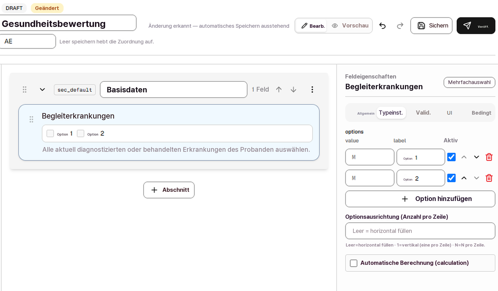
options — die Optionsliste. Sie besteht aus den drei Spalten value · label · Aktiv sowie Schaltflächen für Reihenfolge · Löschen. 3.2
[+ Option hinzufügen] — fügt eine weitere Optionszeile hinzu. 3.2
Optionsausrichtung (Anzahl pro Zeile) — legt fest, wie viele Checkboxen in einer Zeile stehen. 3.3
Automatische Berechnung (calculation) — das Element wird angezeigt, wird bei diesem Typ aber nicht verwendet. Es berechnet Zahlenwerte aus anderen Feldwerten; verwenden Sie es daher beim Typ Zahl.
Zu beachten
Unbedingt prüfen Datenschäden · Formular nicht abschließbar
- • ⛔ Der value der beiden anfangs vorhandenen Zeilen ist leer. label enthält
Option 1·Option 2, value zeigt aber nur ein hellgrauesM— also ein Eingabebeispiel. Wird so gespeichert, entstehen Optionen ohne gespeicherten Wert; füllen Sie value daher unbedingt aus. 3.2
Leicht missverständliches Verhalten
- • Die Darstellungsart kann nicht gewählt werden. Die Mehrfachauswahl wird immer als Checkboxen angezeigt; eine Einstellung zur Umstellung auf ein Dropdown gibt es nicht.
- • Ein Standardwert kann nicht festgelegt werden. Wenn eine Vorauswahl nötig ist, überprüfen Sie das Design erneut — die Mehrfachauswahl setzt voraus, dass Erfasser selbst prüfen und auswählen.
Hinweis
- • Der Aufbau dieses Tabs ist durch den beim Erstellen des Felds gewählten Typ festgelegt. Bei einem anderen Typ ändern sich auch die Elemente dieses Tabs.
Unterschiede zur Einzelauswahl
| Bei der Einzelauswahl vorhanden | Bei der Mehrfachauswahl | Grund |
|---|---|---|
| Darstellungsart (Dropdown/Radio) | Keine | Typ mit Mehrfachauswahl, daher auf Checkboxen festgelegt |
| Standardwert (defaultValue) | Keine | Kein Feld zur Vorauswahl vorhanden |
| Optionsausrichtung — nur bei Radio | Immer angezeigt | Bei Checkboxen muss die Anordnung über mehrere Zeilen immer festgelegt werden |
3.2Optionsliste (value · label · Aktiv · Reihenfolge · Löschen)
Überblick
Erstellen Sie die Optionen eine pro Zeile. Eine Zeile besteht aus gespeichertem Wert (value) · Anzeigetext (label) · Aktiv-Status; mit den Schaltflächen rechts können Sie die Reihenfolge ändern oder die Zeile löschen. Dieser Bildschirm ist der Kern dieses Typs.
Bildschirmbeschreibung
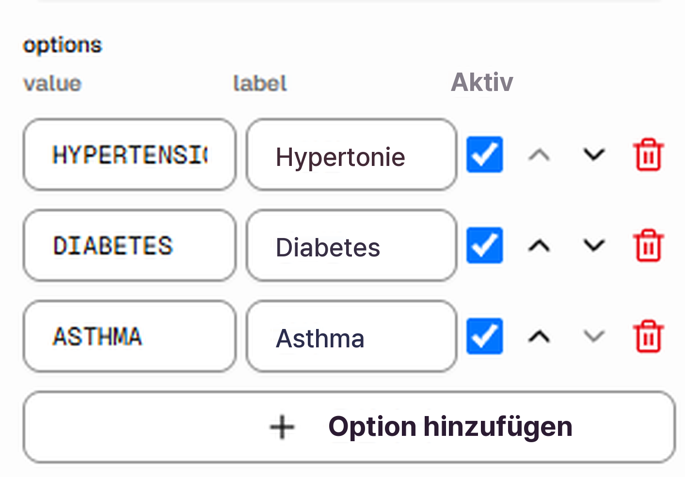
value — der Wert, der in den Daten gespeichert wird. In der Aufnahme wurden Zeichenfolgen mit erkennbarer Bedeutung wie HYPERTENSION · DIABETES · ASTHMA verwendet. Auch wenn dieses Feld in der bedingten Anzeige 6.2 oder in Validierungsregeln 4.3 referenziert wird, wird dieser Wert verwendet.
label — der auf dem Bildschirm sichtbare Text. In der Aufnahme Hypertonie · Diabetes · Asthma. Er wird nicht in den Daten gespeichert.
Aktiv · Reihenfolge (↑↓) · Löschen (🗑) — Wenn Sie Aktiv deaktivieren, können Sie die Option ohne sie zu löschen aus der Liste herausnehmen. Mit den Pfeilen ändern Sie die Anzeigereihenfolge, mit dem Papierkorb löschen Sie die Zeile.
[+ Option hinzufügen] — fügt eine weitere Optionszeile hinzu. Wiederholen Sie dies so oft wie nötig.
Zu beachten
Unbedingt prüfen Datenschäden · Formular nicht abschließbar
- • ⛔ Ändern Sie value nach der Veröffentlichung nicht. Sonst ist nicht mehr erkennbar, welcher Option bereits gespeicherte Werte entsprechen. Wenn Sie nur die Anzeige korrigieren möchten, ändern Sie nur label.
- • ⛔ Legen Sie zuerst fest, ob eine Option „Keine“ aufgenommen wird. Kann bei einer Frage der Fall eintreten, dass kein Eintrag zutrifft, müssen Sie eine Zeile wie
NONE·Keinehinzufügen, damit Erfasser „geprüft und nicht zutreffend“ markieren können. 2.2 · 2.4
Leicht missverständliches Verhalten
- • Für value eignen sich wie in der Aufnahme Zeichenfolgen mit erkennbarer Bedeutung. Bei der Mehrfachauswahl werden mehrere Werte in einer Zelle gespeichert; erscheinen sie in den Exportdaten z. B. als
HYPERTENSION;ASTHMA, sind sie sofort lesbar — bei Zahlencodes müssen Sie jedes Mal eine Zuordnungstabelle nachschlagen. - • Die Reihenfolge ist die Lesereihenfolge der Erfasser. Stehen häufige Einträge vorne, geht das Ankreuzen schneller, und „Keine“ ganz am Ende sorgt für weniger Verwechslungen.
Rollen der drei Spalten
| Spalte | Inhalt | In den Daten gespeichert? | Änderbar? |
|---|---|---|---|
| value | Gespeicherter Wert (z. B. ASTHMA) | Gespeichert | Nach der Veröffentlichung nicht ändern |
| label | Bildschirmtext (z. B. Asthma) | Nicht gespeichert | Jederzeit änderbar |
| Aktiv | Ob die Option angeboten wird | Nicht gespeichert | Im laufenden Betrieb nur mit Bedacht ändern |
3.3Optionsausrichtung (Anzahl pro Zeile)
Überblick
Legt fest, wie viele Checkboxen in einer Zeile stehen. Bei der Einzelauswahl erscheint dieses Element nur bei Radio, bei der Mehrfachauswahl wird es aber immer angezeigt — denn die Optionen werden immer als Checkboxen ausgeklappt.
Bildschirmbeschreibung
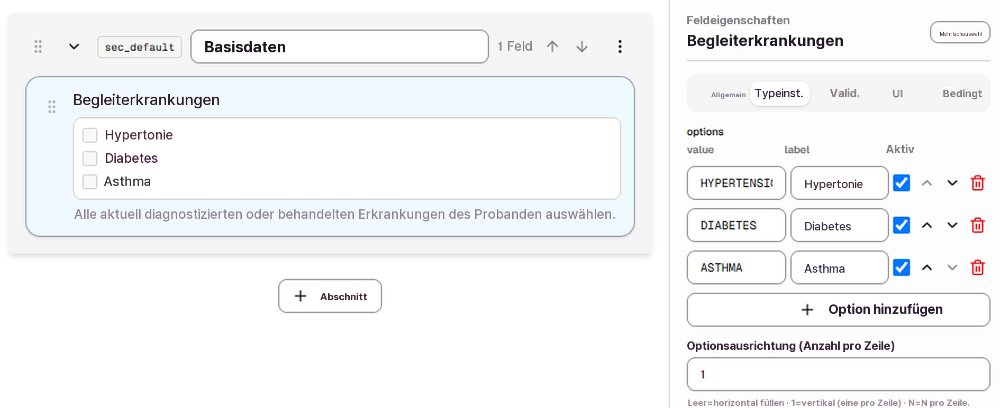
Optionsausrichtung (Anzahl pro Zeile) — Geben Sie eine Zahl ein. In der Aufnahme 1.
Die Checkboxen werden einzeln pro Zeile untereinander angeordnet. Vor der Festlegung standen sie horizontal nebeneinander.
Zu beachten
Unbedingt prüfen Datenschäden · Formular nicht abschließbar
- • Setzen Sie Listen, die lückenlos durchgesehen werden müssen, auf vertikal (1). Bei der Mehrfachauswahl müssen alle zutreffenden Einträge gefunden werden; ist die Liste horizontal dicht gedrängt, springt das Auge leicht weiter, und Häkchen werden leicht vergessen.
Leicht missverständliches Verhalten
- • Viele Optionen machen den Bildschirm lang. Bei vertikaler Anordnung ist eventuell nicht alles auf einen Blick sichtbar; bei mehr als 10 Einträgen wählen Sie daher als Kompromiss etwa 2 Spalten (N=2).
- • Die Wirkung hängt auch von der Layoutbreite 5.2 ab. Wenn Sie die Feldbreite verringern, passt die festgelegte Anzahl möglicherweise nicht in eine Zeile.
Hinweis
- • Ein Element zur Auswahl der Darstellungsart gibt es nicht. Die Mehrfachauswahl besteht immer aus Checkboxen. 3.1
Anordnung je nach Eingabewert
| Eingabe | Anordnung | Geeignet, wenn |
|---|---|---|
| Leer (nicht festgelegt) | Horizontal füllen — so viele nebeneinander, wie die Breite zulässt | die Optionstexte kurz und wenige sind |
1 | Vertikal — eine pro Zeile | Listen, bei denen nichts fehlen darf · lange Texte |
N | N pro Zeile | eine gleichmäßige Anordnung in 2 · 3 Spalten gewünscht ist |
Tab „Validierung“ — Wertprüfung vor dem Speichern
- 4.1Ohne Validierungsregeln
- 4.2Regel hinzufügen
- 4.3Fertig erstellte Regel — Vergleich mit anderem Feld
4.1Ohne Validierungsregeln
Überblick
In diesem Tab werden Regeln gesammelt, die vor dem Speichern prüfen, ob ein Wert eine Bedingung erfüllt. Bei der Mehrfachauswahl kann nur aus den erstellten Optionen ausgewählt werden, daher ist keine Bereichsprüfung nötig; stattdessen verwenden Sie diesen Tab, um die Beziehung zu anderen Feldern zu prüfen. 4.3
Bildschirmbeschreibung
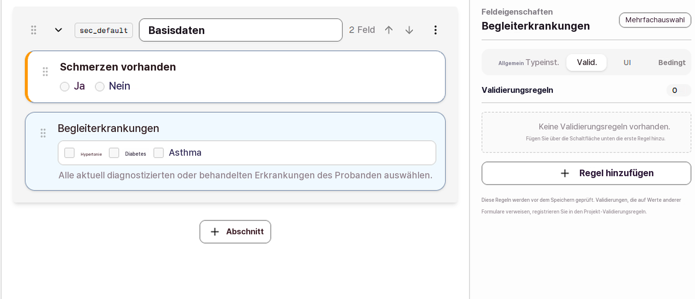
[+ Regel hinzufügen] — erstellt die erste Regel. Der Bildschirm nach der Auswahl wird in 4.2 erläutert.
Bereich Validierungsregeln und Anzahl der registrierten Regeln. Anfangs 0 Regeln.
Ohne Regeln erscheint der Hinweis „Keine Validierungsregeln vorhanden. Fügen Sie über die Schaltfläche unten die erste Regel hinzu.“
Hinweis unten — „Diese Regeln werden vor dem Speichern geprüft. Validierungen, die auf Werte anderer Formulare verweisen, registrieren Sie in den Projekt-Validierungsregeln.“
Zu beachten
Unbedingt prüfen Datenschäden · Formular nicht abschließbar
- • ⛔ Eine Regel „mindestens N auswählen“ kann nicht erstellt werden. Die Regeln dieses Tabs prüfen die Beziehung zu anderen Feldern und zählen nicht die Anzahl der Auswahlen. Wenn eine Mindestanzahl erzwungen werden muss, prüfen Sie, ob dies in den Projekt-Validierungsregeln möglich ist.
- • Validierungen, die auf Werte anderer Formulare verweisen, können hier nicht erstellt werden. Registrieren Sie solche Regeln im Bildschirm „Projekt-Validierungsregeln“.
Leicht missverständliches Verhalten
- • Die Aufnahme enthält zwei Felder: „Schmerzen vorhanden“ und „Begleiterkrankungen“ — da von der Antwort auf die erste Frage abhängt, ob das zweite Element abgefragt wird, erstellen Sie in 4.3 eine Regel, die beide Felder verknüpft.
- • Sie müssen keine Regel erstellen. Bei den meisten Elementen genügen die Optionen.
4.2Regel hinzufügen
Überblick
Wenn Sie in 4.1 [+ Regel hinzufügen] wählen, wird der Block Regel 1 erstellt. Anfangs ist Wertebereich eingestellt, bei der Mehrfachauswahl wird tatsächlich aber Vergleich mit anderem Feld verwendet — wenn Sie ruleType ändern, ändert sich der Bildschirm. 4.3
Bildschirmbeschreibung
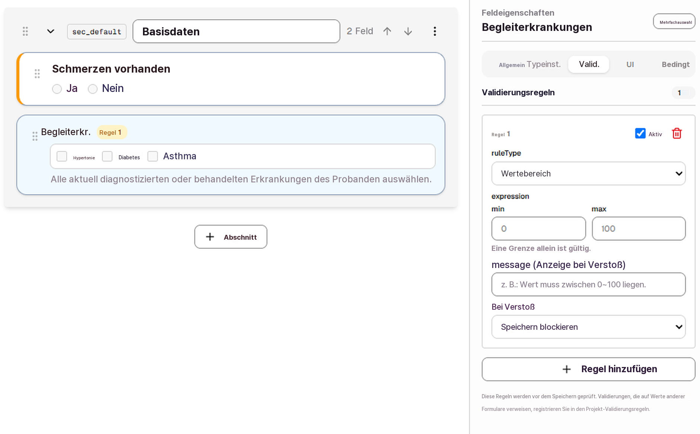
[+ Regel hinzufügen] — erstellt eine weitere Regel. (Dieselbe Schaltfläche, die Sie in 4.1 gewählt haben.)
Der Block „Regel 1“ wird erstellt, und neben dem Anzeigenamen auf dem Canvas erscheint das Badge „Regel 1“.
Die Regelanzahl ändert sich auf 1 Regel.
Checkbox Aktiv und Symbol Löschen — Sie können die Regel vorübergehend aussetzen, ohne sie zu löschen.
ruleType — die Art der Regel. Anfangs ist Wertebereich ausgewählt.
min — das Feld für die Untergrenze, das bei Auswahl von Wertebereich erscheint.
max — das Feld für die Obergrenze, das unter derselben Bedingung erscheint.
Die hellgrauen Texte 0 · 100 und „z. B.: Wert muss zwischen 0~100 liegen.“ sind Eingabebeispiele und keine eingestellten Werte.
message (Anzeige bei Verstoß) — der Text, der Benutzern bei einem Regelverstoß angezeigt wird.
Bei Verstoß — Wählen Sie Speichern blockieren oder Warnung. (Je nach ruleType ist die Auswahl teils nicht möglich — 4.3)
Zu beachten
Unbedingt prüfen Datenschäden · Formular nicht abschließbar
- • ⛔ Verwenden Sie bei der Mehrfachauswahl keinen „Wertebereich“. Da der gespeicherte Wert eine Menge mehrerer Werte ist, ist ein Größenvergleich nicht möglich, und Werte außerhalb der Optionen können ohnehin nicht eingegeben werden. 1.1 · 3.2
- • Bleibt message leer, wissen Benutzer nicht, warum gesperrt wurde. Geben Sie unbedingt einen Text ein.
Leicht missverständliches Verhalten
- • Nützlich ist bei diesem Typ „Vergleich mit anderem Feld“. Damit wird eine Beziehung geprüft wie „dieses Element kann nur beantwortet werden, wenn bei der vorherigen Frage ein bestimmter Wert ausgewählt wurde“. 4.3
- • Sie können mehrere Regeln erstellen; gespeichert wird nur, wenn alle aktiven Regeln erfüllt sind.
4.3Fertig erstellte Regel — Vergleich mit anderem Feld
Überblick
Wenn Sie ruleType auf Vergleich mit anderem Feld ändern, ändert sich der Bildschirm vollständig. Da mit dem Wert eines anderen Felds im selben Formular verglichen wird, lassen sich Beziehungen abbilden, bei denen die Zulässigkeit dieses Elements von der Antwort auf die vorherige Frage abhängt.
Bildschirmbeschreibung
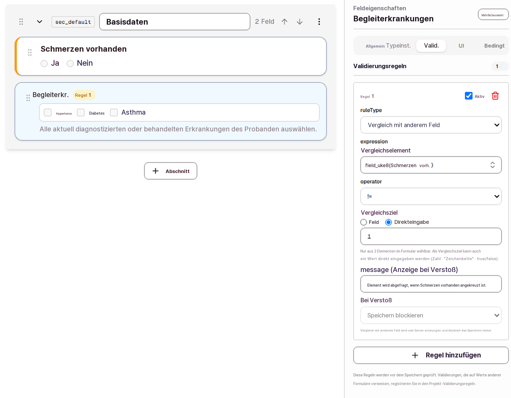
ruleType = Vergleich mit anderem Feld — Wenn ausgewählt, werden die Felder darunter für den Vergleich umgestellt.
Vergleichselement — Wählen Sie ein anderes Feld im selben Formular. In der Aufnahme field_uke8(Schmerzen vorhanden).
operator — die Vergleichsart. In der Aufnahme != (ungleich).
Vergleichsziel — Wählen Sie zwischen Feld und Direkteingabe. In der Aufnahme wurde per Direkteingabe 1 eingetragen — der gespeicherte Wert (value) von „Schmerzen vorhanden“. 3.2
Bildschirmhinweis — „Nur aus 2 Elementen im Formular wählbar. Als Vergleichsziel kann auch ein Wert direkt eingegeben werden (Zahl · "Zeichenkette" · true/false).“
message (Anzeige bei Verstoß) — In der Aufnahme lautet sie Element wird abgefragt, wenn Schmerzen vorhanden angekreuzt ist.
Bei Verstoß — grau und inaktiv. Wie der Bildschirmhinweis sagt: „Vergleich mit anderem Feld wird vom Server erzwungen und blockiert das Speichern immer.“ — bei dieser Regel kann keine Warnung gewählt werden; sie ist auf Speichern blockieren festgelegt.
Zu beachten
Unbedingt prüfen Datenschäden · Formular nicht abschließbar
- • ⛔ Prüfen Sie die Richtung der Bedingung unbedingt vor der Veröffentlichung. Grundsätzlich wird eine Validierungsregel als Bedingung formuliert, die erfüllt sein muss; die Einstellung in der Aufnahme (
Schmerzen vorhanden != 1) und die message („Element, das abgefragt wird, wenn Schmerzen vorhanden angekreuzt ist“) lesen sich jedoch gegensätzlich. Schon ein einziges Vergleichszeichen kehrt die Bedeutung um; prüfen Sie daher nach der Einstellung das tatsächliche Verhalten in der Vorschau. - • ⛔ Als Vergleichsziel geben Sie nicht label, sondern value ein. Prüfen Sie zuerst den gespeicherten Wert in der Optionsliste des referenzierten Felds. 3.2
Leicht missverständliches Verhalten
- • Diese Regel kann nicht als Warnung eingestellt werden. Da Bei Verstoß auf Speichern blockieren festgelegt ist, verwenden Sie sie nur für Beziehungen, die unbedingt verhindert werden müssen.
- • Bei derselben Beziehung hat die bedingte Anzeige Vorrang — was gar nicht erst abgefragt wird, kann auch nicht falsch eingegeben werden. Kap. 6
Tab „UI“ — Bildschirmanordnung und Hinweistexte
- 5.1Gesamtaufbau des Tabs „UI“
- 5.2Layoutbreite
- 5.3Schreibgeschützt · Ausblenden
- 5.4helpText (Hilfetext)
5.1Gesamtaufbau
Überblick
In diesem Tab legen Sie nicht den Wert selbst fest, sondern wie das Feld auf dem Bildschirm angeordnet und erläutert wird. Die Einstellungen dieses Tabs ändern die gespeicherten Daten nicht. Ausblenden verbirgt das Feld jedoch nur auf dem Bildschirm und nimmt es nicht aus der Pflichtfeldzählung aus; lesen Sie daher vor der Verwendung 5.3.
Bildschirmbeschreibung
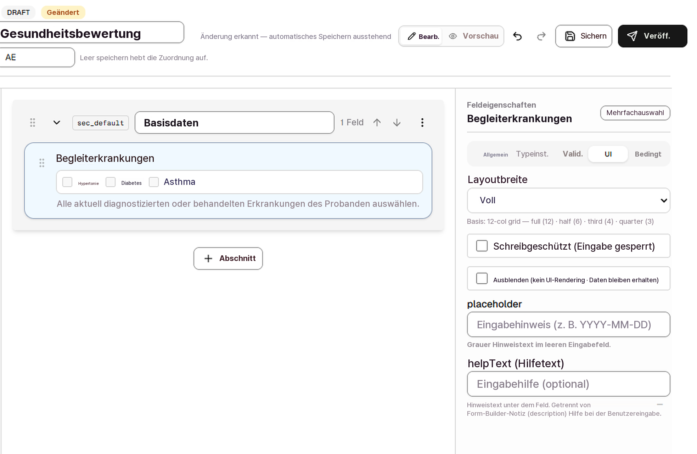
Layoutbreite — die Breite, die dieses Feld in einer Zeile einnimmt. Die Bedeutung der Optionen steht im Hinweis direkt darunter: „Basis: 12-col grid — full (12) · half (6) · third (4) · quarter (3)“. 5.2
Schreibgeschützt (Eingabe gesperrt) — wird angezeigt, kann aber nicht geändert werden. 5.3
Ausblenden (kein UI-Rendering · Daten bleiben erhalten) — verbirgt das Feld auf dem Bildschirm. 5.3
placeholder — das Element wird angezeigt, bei der Mehrfachauswahl aber nicht verwendet. Es ist ein Hinweistext, der bei leerem Wert im Eingabefeld erscheint; Checkboxen haben dafür jedoch keinen Platz. Wenn ein Hinweis nötig ist, verwenden Sie helpText. 5.4
helpText (Hilfetext) — Hinweistext, der unter dem Feld angezeigt wird. 5.4
Zu beachten
Unbedingt prüfen Datenschäden · Formular nicht abschließbar
- • Bei diesem Typ ist helpText der einzige Hinweistext. Da placeholder nicht verwendet werden kann, verteilen Sie den Hinweis „alle auswählen“ und die Auswahlkriterien auf helpText und den Hilfetext 2.1. 5.4
Leicht missverständliches Verhalten
- • Breite und Optionsausrichtung bestimmen gemeinsam die Anordnung. Da die Checkboxen horizontal nebeneinander stehen, wird die festgelegte Anzahl pro Zeile bei geringerer Breite möglicherweise nicht eingehalten. 3.3 · 5.2
- • Die hellgrauen Texte
Eingabehinweis (z. B. YYYY-MM-DD)·Eingabehilfe (optional)in den Eingabefeldern sind Eingabebeispiele und keine eingestellten Werte.
Hinweis
- • Standard ist Layoutbreite = Voll; Schreibgeschützt · Ausblenden sind deaktiviert.
5.2Layoutbreite
Überblick
Wählen Sie die Breite, die dieses Feld im 12-column grid, das eine Zeile in 12 Spalten teilt, einnimmt. Bei der Mehrfachauswahl stehen die Checkboxen horizontal nebeneinander, daher wirkt sich die Breite direkt auf die Anordnung aus.
Bildschirmbeschreibung
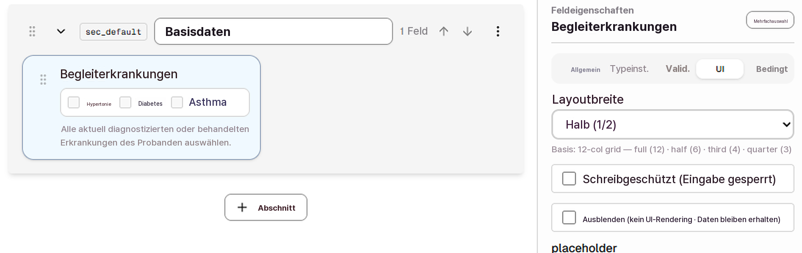
Layoutbreite — Legen Sie die Breite in der Auswahlliste fest. Im Beispiel Halb (1/2).
Das Feld wird auf halbe Breite verkleinert. In der Aufnahme passen die drei Checkboxen wegen der kurzen Texte noch in eine Zeile; kommen aber Optionen hinzu oder werden die Texte länger, entstehen Zeilenumbrüche.
Zu beachten
Unbedingt prüfen Datenschäden · Formular nicht abschließbar
- • ⛔ Verringern Sie bei Feldern mit vielen Optionen nicht die Breite. Werden die Checkboxen unregelmäßig umgebrochen, werden Einträge leicht übersehen. Wenn Sie die Breite unbedingt verringern müssen, stellen Sie zugleich die Optionsausrichtung auf 1 (vertikal) um. 3.3
Leicht missverständliches Verhalten
- • Wenn Sie die Breite verringern, wird das nächste Feld in derselben Zeile angeordnet. Übersteigt die Summe einer Zeile 12, wird in die nächste Zeile umgebrochen.
- • Prüfen Sie nach der Änderung der Einstellung die Anordnung auf dem Canvas. Die Vorschau zeigt die tatsächlichen Zeilenumbrüche unverändert.
Hinweis
- • Auf Geräten mit schmalem Bildschirm können die Felder unabhängig von der Einstellung einzeln untereinander angeordnet werden.
Breitenoptionen
| Option | Belegte Spalten | Bei der Mehrfachauswahl |
|---|---|---|
| Voll | 12 | Auch bei vielen Optionen sicher — empfohlen |
| Halb (1/2) | 6 | Bis zu 3~4 kurze Optionen |
| Drittel (1/3) | 4 | Häufigere Zeilenumbrüche |
| Viertel (1/4) | 3 | Nicht empfohlen |
5.3Schreibgeschützt · Ausblenden
Überblick
Damit wird das Feld gegen Änderungen gesperrt oder nicht angezeigt. In beiden Fällen bleiben gespeicherte Werte unverändert erhalten.
Bildschirmbeschreibung
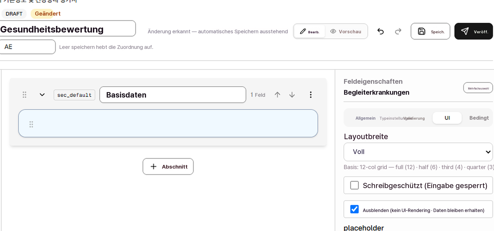
Schreibgeschützt (Eingabe gesperrt) — ausgewählte Einträge sind sichtbar, können vom Benutzer aber nicht geändert werden. (In dieser Aufnahme deaktiviert)
Ausblenden (kein UI-Rendering · Daten bleiben erhalten) — wird in der Eingabemaske nicht angezeigt. Bereits gespeicherte Werte werden nicht gelöscht.
Das Feld verschwindet vom Canvas, und der Abschnitt wirkt leer.
Zu beachten
Unbedingt prüfen Datenschäden · Formular nicht abschließbar
- • ⛔ Blenden Sie keine Pflichtfelder aus. Das Ausblenden im Tab „UI“ verbirgt das Feld nur auf dem Bildschirm und nimmt es nicht aus der Pflichtfeldzählung aus — ein Element, bei dem Benutzer nichts auswählen können, bleibt im Nenner, und das Formular kann nicht abgeschlossen werden.
- • Ausblenden löscht keine Daten. Das Feld verschwindet nur vom Bildschirm; um den Wert zu löschen, müssen Sie das Feld löschen.
Leicht missverständliches Verhalten
- • Es unterscheidet sich vom Ausblenden im Tab „Bedingt“. Felder, die ausgeblendet sind, weil die Bedingung nicht zutrifft, werden aus der Pflichtfeldzählung ausgenommen Kap. 6. Obwohl beide als „Ausblenden“ bezeichnet werden, ist die Behandlung bei der Validierung genau entgegengesetzt; unterscheiden Sie daher beides.
- • Schreibgeschützt und Ausblenden sind verschieden. Schreibgeschützt bedeutet „anzeigen, aber nicht änderbar“, Ausblenden bedeutet „nicht anzeigen“. Wenn bereits ausgewählte Einträge sichtbar bleiben müssen, verwenden Sie Schreibgeschützt.
Hinweis
- • Auch ausgeblendet bleibt das Feld im Strukturbereich erhalten — Sie können es erneut auswählen und die Einstellung zurücksetzen.
5.4helpText (Hilfetext)
Überblick
Ein Hinweistext unter dem Feld. Bei der Mehrfachauswahl kann placeholder nicht verwendet werden, daher ist helpText das einzige Hinweismittel. Er verschwindet auch nach Beginn der Eingabe nicht und eignet sich daher, um Auswahlkriterien anzugeben.
Bildschirmbeschreibung
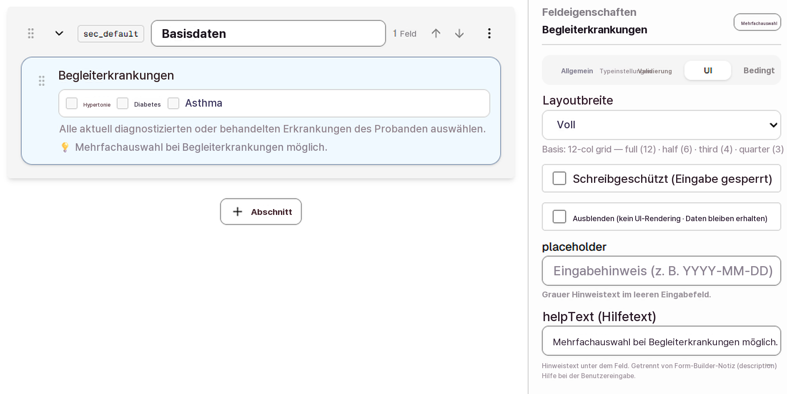
placeholder — leer lassen. Das Element wird angezeigt, bei Checkboxen gibt es aber keinen Platz, an dem es angewendet werden kann. 5.1
helpText (Hilfetext) — Geben Sie den Hinweistext ein, der unter dem Feld angezeigt wird. In der Aufnahme Mehrfachauswahl bei Begleiterkrankungen möglich. — damit wird darauf hingewiesen, dass mehrere ausgewählt werden können.
Erscheint unter dem Feld zusammen mit dem Glühbirnensymbol (💡). Auch nach der Auswahl von Einträgen verschwindet er nicht.
Zu beachten
Unbedingt prüfen Datenschäden · Formular nicht abschließbar
- • Geben Sie unbedingt an, dass „mehrere ausgewählt werden können“. In der Aufnahme übernimmt „Mehrfachauswahl … möglich“ diese Rolle — tatsächlich wird oft trotz Checkboxen nur eine Option ausgewählt und weitergegangen.
- • Auch Hinweise wie „falls nicht zutreffend, ‚Keine‘ wählen“ gehören hierher. Selbst wenn Optionen angelegt sind, lassen Erfasser das Feld leer und gehen weiter, wenn sie deren Bedeutung nicht kennen. 2.2 · 3.2
Leicht missverständliches Verhalten
- • description und helpText sind unterschiedliche Elemente. Wie der Bildschirmhinweis sagt — helpText: „Getrennt von Form-Builder-Notiz (description) — Hilfe bei der Benutzereingabe“. Wenn Sie beide eingeben, werden zwei Zeilen zusammen angezeigt.
Rollen der Hinweistexte
| Element | Anzeigeposition | Bei der Mehrfachauswahl | Einstellort |
|---|---|---|---|
| helpText | unter dem Feld (💡) | Mehrfachauswahl möglich · Auswahlkriterien | Tab „UI“ |
| description | unter dem Anzeigenamen | Was das Element abfragt | Tab „Allgemein“ 2.1 |
| placeholder | — | Nicht verwendet | Tab „UI“ |
Tab „Bedingt“ — Anzeige abhängig von anderen Werten
- 6.1Bedingte Anzeige aktivieren
- 6.2Bedingung festlegen
6.1Bedingte Anzeige aktivieren
Überblick
Mit dieser Funktion wird das Feld abhängig vom Wert eines anderen Felds angezeigt oder ausgeblendet. Sie wird für Verzweigungen verwendet, z. B. um Begleiterkrankungen nur abzufragen, wenn „Schmerzen vorhanden = Ja“ — nicht betroffenen Probanden wird die lange Checkbox-Liste nicht angezeigt, und das Formular wird deutlich kürzer.
Bildschirmbeschreibung
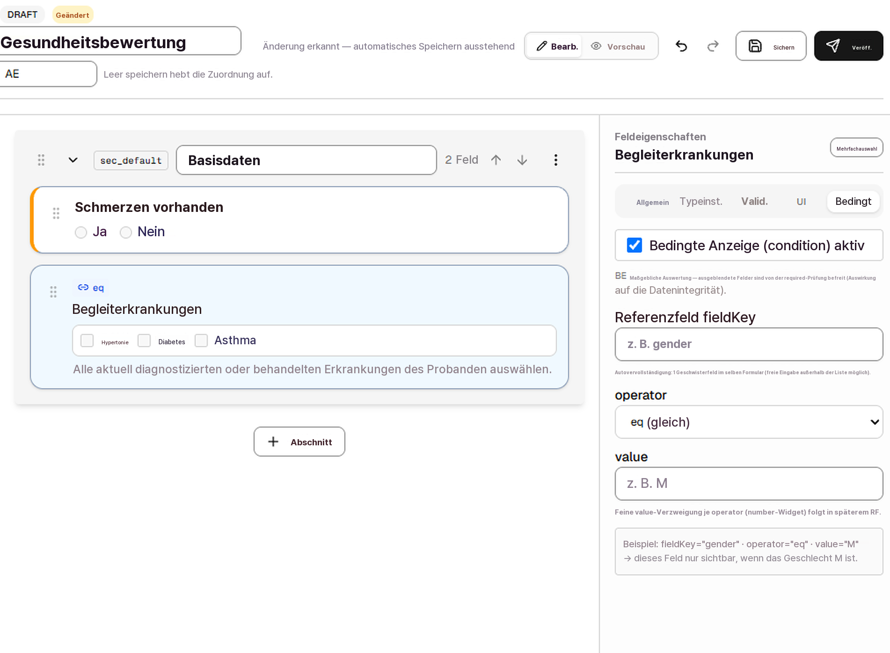
Bedingte Anzeige (condition) aktiv — Wenn aktiviert, werden die folgenden Bedingungseinstellungen angezeigt.
Über dem Feld auf dem Canvas erscheint das Badge 🔗 eq und zeigt an, dass eine Bedingung angewendet wird.
⚠ Bildschirmhinweis — „ausgeblendete Felder sind von der required-Prüfung befreit (Auswirkung auf die Datenintegrität).“ Die Bedingung wird vom System ausgewertet.
Referenzfeld fieldKey — ein anderes Feld im selben Formular, das als Grundlage der Bedingung dient. Geschwisterfelder desselben Formulars werden automatisch vervollständigt; Werte, die nicht in der Liste stehen, können Sie auch direkt eingeben.
operator — die Vergleichsart. Standard ist eq (gleich).
value — der Vergleichswert.
Beispiel unten — fieldKey="gender" · operator="eq" · value="M" → dieses Feld nur sichtbar, wenn das Geschlecht M ist.
Zu beachten
Unbedingt prüfen Datenschäden · Formular nicht abschließbar
- • Wenn Sie eine Bedingung festlegen, kann die Pflichtprüfung entfallen. Solange das Feld ausgeblendet ist, weil die Bedingung nicht zutrifft, wird das Formular abgeschlossen, auch wenn dieses Feld ein Pflichtfeld und leer ist. Dies ist kein Fehler, sondern beabsichtigtes Verhalten.
- • ⛔ Wird die Bedingung falsch, während bereits Einträge angekreuzt sind, verschwindet diese Auswahl vom Bildschirm. Wurden mehrere Optionen ausgewählt, wird die gesamte Menge unsichtbar; seien Sie daher vorsichtig, wenn Sie das Feld, das als Grundlage der Verzweigung dient, nachträglich ändern.
Leicht missverständliches Verhalten
- • Prüfen Sie die bedingte Anzeige vor Validierungsregeln 4.3. Wenn nicht betroffene Personen gar nicht erst gefragt werden, kann weder falsch ausgewählt noch das Speichern blockiert werden.
Hinweis
- • Wenn Sie die Bedingung aktivieren und das Referenzfeld leer lassen, ist die Bedingung nicht erfüllt. Geben Sie unbedingt ②~④ vollständig ein. 6.2
6.2Bedingung festlegen
Überblick
Zustand, in dem die in 6.1 aktivierte Bedingung vollständig eingegeben ist. Mit dieser Einstellung wird dieses Feld nur dann in der Eingabemaske angezeigt, wenn der Wert des Felds „Schmerzen vorhanden“ 1 ist.
Bildschirmbeschreibung
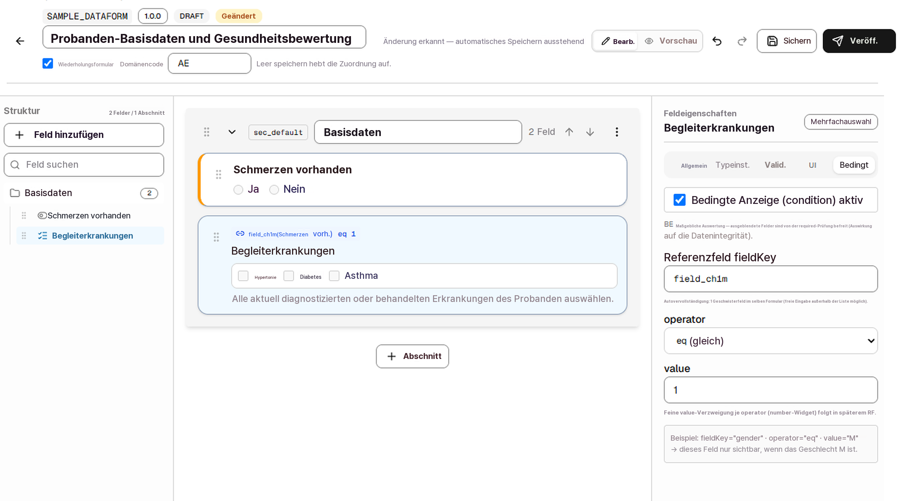
Schmerzen vorhanden 1 istReferenzfeld fieldKey = field_ch1m — verweist auf das Feld „Schmerzen vorhanden“ im selben Formular.
operator = eq (gleich)
value = 1 — Geben Sie nicht das auf dem Bildschirm angezeigte „Ja“ ein, sondern den gespeicherten Wert (value) dieser Option. 3.2
Ergebnis, nachdem ①~③ vollständig eingegeben sind — das Badge auf dem Canvas wird zu 🔗 field_ch1m(Schmerzen vorhanden) eq 1 konkretisiert.
Das referenzierte Feld „Schmerzen vorhanden“ muss sich im selben Formular befinden; Sie können dies im Strukturbaum prüfen.
Beispiel unten — fieldKey="gender" · operator="eq" · value="M" → dieses Feld nur sichtbar, wenn das Geschlecht M ist.
Zu beachten
Unbedingt prüfen Datenschäden · Formular nicht abschließbar
- • ⛔ Geben Sie bei value nicht label, sondern den gespeicherten Wert ein. Wenn Sie „Ja“ eingeben, ist die Bedingung nie erfüllt, und dieses Feld wird niemals angezeigt. Prüfen Sie zuerst den gespeicherten Wert in der Optionsliste des referenzierten Felds. 3.2
- • ⛔ Verwenden Sie kein Mehrfachauswahlfeld als Grundlage einer Bedingung.
eqist nur erfüllt, wenn der Wert genau übereinstimmt; der Wert einer Mehrfachauswahl ist jedoch eine Menge der ausgewählten Optionen und ändert sich je nach gewählter Kombination. Wenn Sie es als Grundlage verwenden möchten, legen Sie separat ein Einzelauswahlfeld an. 1.1 - • Wenn Sie value oder fieldKey des Referenzfelds ändern, bricht die Bedingung unbemerkt. Sie ist dann ohne Fehlermeldung einfach nicht mehr erfüllt; Änderungen nach der Veröffentlichung sind daher riskant. 2.1 · 3.2
Hinweis
- • Bedingungen verkürzen das Formular und reduzieren unnötige Eingaben. Widersprechen sich Bedingungen jedoch, entstehen Felder, die nie angezeigt werden; prüfen Sie daher nach der Einstellung unbedingt in der Vorschau.
Anhang
- 7.1Einstellungen auf einen Blick
7.1Einstellungen des Mehrfachauswahlfelds auf einen Blick
Einstellungen je Tab
| Tab | Element | Was wird festgelegt | Abschnitt |
|---|---|---|---|
| Allgemein | fieldKey | Tatsächlicher Speicherschlüssel des Werts (nach dem Speichern nicht ändern) | 2.1 |
| label (Anzeigename) | Auf dem Bildschirm angezeigter Elementname | 2.1 | |
| description (Hilfetext) | Ergänzende Beschreibung unter dem Anzeigenamen — angeben, dass „alle auszuwählen“ sind | 2.1 | |
| Pflichtfeld | Mit mindestens einer Auswahl erfüllt (zuerst Option „Keine“) | 2.2 | |
| SDV-Verifizierung | Ob Gegenstand des CRA-Quelldatenabgleichs · ob Verifizierung erforderlich | 2.3 | |
| AE-Bedeutungsrolle | Dieser Typ kann nicht zugeordnet werden (nur für Einzelauswahl) | 1.1 | |
| „Nicht gemessen“ zulassen | Ob „Nicht prüfbar“ als Wert erfasst werden kann · Anzeigelabel · Indikator | 2.4 | |
| Typeinstellungen | options — value | Gespeicherter Wert (nach der Veröffentlichung nicht ändern) | 3.2 |
| options — label | Auf dem Bildschirm sichtbarer Text (jederzeit änderbar) | 3.2 | |
| options — Aktiv · Reihenfolge · Löschen | Ob die Option angeboten wird · Anzeigereihenfolge · Zeile löschen | 3.2 | |
| Optionsausrichtung | Anzahl pro Zeile — immer angezeigt (leer=horizontal / 1=vertikal / N=N Stück) | 3.3 | |
| Automatische Berechnung | Bei diesem Typ nicht verwendet | 3.1 | |
| Validierung | ruleType | Regelart — bei diesem Typ wird Vergleich mit anderem Feld verwendet | 4.2 · 4.3 |
| Vergleichselement · operator · Vergleichsziel | Bedingung im Vergleich mit einem anderen Feld im selben Formular (Vergleich mit value) | 4.3 | |
| message | Bei Verstoß angezeigter Text | 4.3 | |
| Bei Verstoß · Aktiv | Vergleich mit anderem Feld ist auf Speichern blockieren festgelegt · Regel aktiv · inaktiv | 4.3 | |
| UI | Layoutbreite | Breite im 12-col grid — bei vielen Optionen Voll | 5.2 |
| Schreibgeschützt | Anzeigen, aber nicht änderbar | 5.3 | |
| Ausblenden | Nicht angezeigt (gespeicherter Wert bleibt · bleibt in der Pflichtfeldzählung) | 5.3 | |
| helpText (Hilfetext) | Einziges Hinweismittel — placeholder wird nicht verwendet | 5.4 | |
| Bedingt | Bedingung aktiv | Ob bedingte Anzeige verwendet wird (von der Pflichtprüfung befreit) | 6.1 |
| Referenzfeld fieldKey | Feld im selben Formular als Grundlage der Bedingung | 6.2 | |
| operator · value | Vergleichsart und Vergleichswert (gespeicherten Wert eingeben) | 6.2 |
Unbedingt merken
Unbedingt prüfen Datenschäden · Formular nicht abschließbar
- • Erfassen Sie „Keine“ nicht als „Nicht gemessen“. Es ist ein geprüftes Ergebnis; nur wenn Sie es als Option hinzufügen, bleibt die Information erhalten. 2.4 · 3.2
- • Erstellen Sie die Option „Keine“, bevor Sie das Feld als Pflichtfeld festlegen. Fehlt sie, können Probanden, auf die nichts zutrifft, das Formular nicht abschließen. 2.2
- • Der value der ersten beiden Zeilen ist leer. Da nur label ausgefüllt ist, geben Sie den gespeicherten Wert unbedingt ein. 3.1 · 3.2
- • Ändern Sie value nach der Veröffentlichung nicht. Die Bedeutung vorhandener Daten geht verloren, und referenzierende Bedingungen brechen unbemerkt. 3.2 · 6.2
- • Verwenden Sie keine Mehrfachauswahl als Grundlage einer Bedingung. Da der Wert eine Menge ist, ist
eqnicht erfüllt. 6.2
Leicht missverständliches Verhalten
- • Der gespeicherte Wert ist eine Menge der ausgewählten Optionen — stimmen Sie das Exportformat vorab mit den Analyseverantwortlichen ab. 1.1
- • Es gibt keine Darstellungsart und keinen Standardwert. Die Darstellung ist auf Checkboxen festgelegt, und eine Vorauswahl ist nicht möglich. 3.1
Hinweis
- • Setzen Sie bei Listen, die lückenlos durchgesehen werden müssen, die Optionsausrichtung auf 1 (vertikal). 3.3
Nicht in diesem Dokument behandelt
AE-Bedeutungsrolle — befindet sich im Tab „Allgemein“, da der Bildschirmhinweis aber angibt, es einem Einzelauswahlfeld zuzuordnen, wird sie bei diesem Typ nicht verwendet. 1.1
Anbindung an gemeinsame Codes (CodeGroup) — das System bietet zwar die Möglichkeit, Optionen als projektweite gemeinsame Codes zu verwalten, auf diesem Bildschirm gibt es dafür jedoch kein Element. Da die Optionen in jedem Formular direkt aufgelistet werden müssen, prüfen Sie, ob value und label einheitlich übereinstimmen. 3.2
Automatische Berechnung (calculation) — das Element wird angezeigt, bei diesem Typ aber nicht verwendet. Verwenden Sie es beim Typ Zahl. 3.1
Validierungsregel „Wertebereich“ — kann als Regelart gewählt werden, ist aber nicht anwendbar, da der Wert eine Menge ist. 4.2